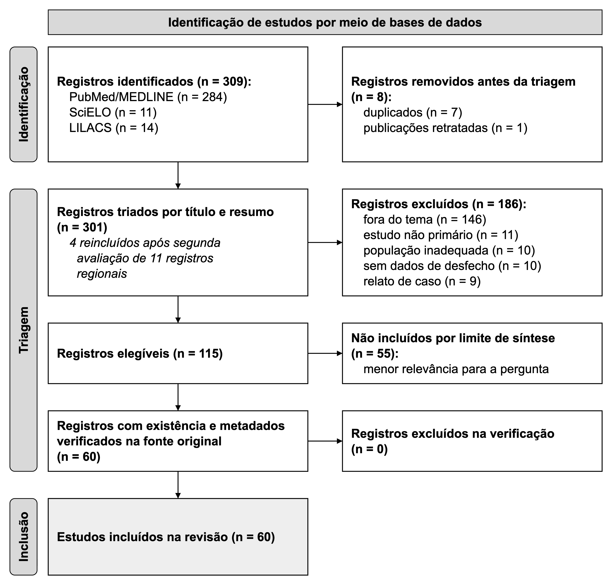

Factors associated with conversion of laparoscopic cholecystectomy to open surgery: an integrative literature review
Autores: [preencher: autores e professor orientador]
Objetivo: Identificar e sintetizar os fatores pré-operatórios e intraoperatórios associados à conversão da colecistectomia videolaparoscópica para cirurgia aberta em adultos.
Métodos: Revisão integrativa da literatura com busca realizada em 25 de setembro de 2026 nas bases PubMed/MEDLINE, SciELO e LILACS, abrangendo publicações de 2021 a 2026 nos idiomas português, inglês e espanhol. Foram identificados 309 registros, triados 301 e incluídos 60 estudos. Quanto ao delineamento, observaram-se 28 coortes retrospectivas, 14 coortes prospectivas, 12 estudos transversais, três estudos de caso-controle, duas séries de casos e um outro delineamento.
Resultados: Sexo masculino, idade avançada e cirurgia abdominal prévia associaram-se frequentemente à conversão, porém com resultados divergentes. Associaram-se ainda obesidade grau III, diabetes mellitus tipo 2, colangiopancreatografia retrógrada endoscópica prévia, intervalo sintoma-cirurgia superior a 72 horas, maior gravidade da colecistite aguda, espessamento parietal vesicular, líquido perivesicular, vesícula contraída, proteína C-reativa elevada e razões proteína C-reativa-albumina e neutrófilo-linfócito, nem sempre como preditores independentes. No intraoperatório, destacaram-se aderências densas, anatomia distorcida e falha na visão crítica de segurança. A menor experiência do cirurgião teve associação inconsistente. Escores preditivos, em sua maioria voltados à colecistectomia difícil, apresentaram área sob a curva de 0,75 a 0,93, com validação externa limitada.
Conclusão: A evidência, predominantemente observacional, sugere que a conversão decorre da interação entre inflamação, anatomia adversa e dificuldade técnica.
Palavras-chave: Colecistectomia videolaparoscópica; Conversão; Cirurgia aberta; Fatores preditores; Fatores de risco; Adulto.
Objective: To identify and synthesize preoperative and intraoperative factors associated with conversion of laparoscopic cholecystectomy to open surgery in adults.
Methods: Integrative literature review with search performed on September 25, 2026, in PubMed/MEDLINE, SciELO, and LILACS, covering publications from 2021 to 2026 in Portuguese, English, and Spanish. A total of 309 records were identified, 301 screened, and 60 studies included. Study designs comprised 28 retrospective cohorts, 14 prospective cohorts, 12 cross-sectional studies, three case-control studies, two case series, and one other design.
Results: Male sex, advanced age, and previous abdominal surgery were frequently associated with conversion, although findings were divergent. Other associated factors were class III obesity, type 2 diabetes mellitus, previous endoscopic retrograde cholangiopancreatography, symptom-to-surgery interval >72 hours, greater severity of acute cholecystitis, gallbladder wall thickening, pericholecystic fluid, contracted gallbladder, elevated C-reactive protein, and C-reactive protein-to-albumin and neutrophil-to-lymphocyte ratios, not always as independent predictors. Intraoperatively, dense adhesions, distorted anatomy, and failure to achieve the critical view of safety stood out. The association with lesser surgeon experience was inconsistent. Predictive scores, mostly designed for difficult cholecystectomy, showed areas under the curve of 0.75 to 0.93, with limited external validation.
Conclusion: The predominantly observational evidence suggests that conversion results from the interaction between inflammation, adverse anatomy, and technical difficulty.
Keywords: Laparoscopic cholecystectomy; Conversion; Open surgery; Predictive factors; Risk factors; Adult.
A colecistectomia videolaparoscópica firmou-se como padrão-ouro no tratamento da doença litiásica vesicular, com benefícios bem estabelecidos: menor dor pós-operatória, estada hospitalar reduzida e recuperação mais rápida. A conversão para cirurgia aberta, contudo, mantém relevância clínica, com taxas que oscilam entre as séries publicadas: 2,2% em série institucional de 317 pacientes [1], 4,54% em hospital terciário mexicano [2], 9,6% em estudo transversal retrospectivo [3], 2,62% em ampla série saudita [4], 4,2% em procedimentos eletivos [5] e 16,89% nas colecistectomias para colecistite aguda [6]. Em obesos com colecistite aguda operados em caráter não eletivo, a conversão associou-se a maior necessidade de transfusão (odds ratio ajustado [AOR] 3,27), complicações respiratórias (AOR 1,36), incremento de custos (β +US$ 719) e prolongamento da internação (β +2,20 dias) [7]. Nesse mesmo subgrupo, a obesidade grau III mostrou-se preditor independente de conversão frente aos graus I–II (AOR 1,45) [7]. Identificar precocemente pacientes com maior propensão a esse desfecho impõe-se, assim, como requisito para planejamento cirúrgico adequado, alocação de recursos e consentimento informado.
A literatura recente reúne multiplicidade de fatores preditores — demográficos, clínicos, laboratoriais, radiológicos e intraoperatórios. Estudos observacionais, entre eles um caso-controle [8], situam o sexo masculino [5,8-10] e a idade avançada [5,8-10] entre os preditores pré-operatórios de conversão mais frequentemente relatados, embora com cortes etários diversos (>60 anos em [9], >65 anos em [5] e variável contínua em [10]); o sexo masculino também se vinculou à colecistectomia laparoscópica difícil [11]. Achados discordantes existem: um estudo apontou o sexo feminino como fator de risco [3] e outro não detectou diferença de idade e sexo entre convertidos e não convertidos [12]. Comorbidades como diabetes mellitus tipo 2 [10] e obesidade grau III [7] emergem como fatores de risco independentes — esta última com razão de chances ajustada de 1,45 frente à obesidade graus I–II em colecistite aguda [7]. Cirurgia abdominal prévia associou-se à conversão em algumas séries [5,13], sobretudo após procedimentos de abdome superior [5,9], e à colecistectomia difícil [11], embora outros trabalhos não tenham confirmado diferença na taxa de conversão [12,14]; antecedentes de colangiopancreatografia retrógrada endoscópica (CPRE) [5], inclusive com esfinterotomia [12], elevaram significativamente a conversão. Na colecistite aguda, o intervalo sintomas-intervenção superior a 72 horas correlaciona-se fortemente com maiores taxas de conversão [6,15], bem como a gravidade inflamatória pelas Diretrizes de Tóquio 2018 [16]. Em série de 102 pacientes com colecistite aguda, as duas conversões registradas (1,96% do total) ocorreram no grupo operado após o sétimo dia [17].
Achados ultrassonográficos e laboratoriais adensam a estratificação de risco. Espessamento da parede vesicular associa-se significativamente à conversão [18-24], com pontos de corte que variam de >2 mm a >7 mm entre os estudos que os definiram [19,20,22,24], assim como a presença de líquido perivesicular [22]; hidropsia e edema perivesicular vincularam-se à colecistectomia difícil [11]. Marcadores inflamatórios sistêmicos — proteína C-reativa (PCR) elevada, razão neutrófilo-linfócito (RNL) e razão PCR-albumina — associaram-se à conversão e a complicações em alguns trabalhos [15,24-27], com a PCR exibindo área sob a curva receiver operating characteristic (ROC) de 0,964 para conversão em colecistite aguda em estudo dedicado [26]; o índice de carga inflamatória, a RNL e a razão PCR-albumina, por sua vez, previram maior dificuldade operatória pela escala de Parkland [28]. Outro estudo, contudo, não confirmou valor preditivo independente dos parâmetros hematológicos e razões derivadas em regressão logística [29]. Coledocolitíase figura entre as causas de conversão, ainda que com menor frequência (n=2) frente à colecistite aguda (n=29) em uma série [30]. Intraoperatoriamente, a incapacidade de obter a visão crítica de segurança [13], a má visualização do triângulo de Calot [13], aderências firmes nesse triângulo [1,30], aderências pericolecísticas densas [13], maior grau de aderências vesiculares [31], lesão de via biliar [3] e fístula colecistoentérica [13] despontam como causas ou fatores associados à conversão; a menor experiência do cirurgião também se vinculou à conversão [3,16,18,32], embora não confirmada em série de 4.013 colecistectomias eletivas [5].
Apesar do volume expressivo de evidências, persistem heterogeneidade nas definições de "colecistectomia difícil", disparidade nos pontos de corte dos preditores contínuos, variabilidade nas populações estudadas — eletivas versus urgência, pós-drenagem percutânea, pós-CPRE — e divergências quanto ao peso relativo de cada fator em modelos multivariados. Grande parte da produção origina-se de centros únicos, com tamanhos amostrais díspares e delineamentos predominantemente retrospectivos, o que restringe a generalização e a aplicação clínica direta dos escores preditivos propostos.
Diante do exposto, o objetivo deste estudo foi realizar uma revisão integrativa da literatura para identificar e sintetizar os fatores pré-operatórios e intraoperatórios associados à conversão da colecistectomia videolaparoscópica para cirurgia aberta em adultos, consolidando a melhor evidência disponível para subsidiar a tomada de decisão clínica e o planejamento cirúrgico seguro.
Trata-se de uma revisão integrativa da literatura, relatada com base nos itens aplicáveis da declaração PRISMA 2020 [33]. A pergunta norteadora foi estruturada pelo acrônimo PICoS, considerando como população (P) Adultos submetidos à colecistectomia videolaparoscópica eletiva ou de urgência; como fenômeno de interesse (I) Fatores pré-operatórios (demográficos, clínicos, laboratoriais, imagiológicos) e intraoperatórios (encontrados cirúrgicos, dificuldades técnicas, eventos adversos); como contexto (Co) Serviços de cirurgia geral em ambiente hospitalar; e como tipos de estudo (S) Estudos primários observacionais (coorte, caso-controle, transversal) e ensaios clínicos. Assim, formulou-se a seguinte questão: Quais fatores pré-operatórios e intraoperatórios estão associados à conversão da colecistectomia videolaparoscópica para cirurgia aberta em adultos?
A busca foi realizada nas bases PubMed/MEDLINE, SciELO e LILACS. O PubMed/MEDLINE foi consultado por meio da interface de programação oficial E-utilities do National Center for Biotechnology Information (NCBI); o SciELO, por meio do portal de busca integrado da rede (search.scielo.org); e o LILACS, por meio do Portal Regional da Biblioteca Virtual em Saúde (pesquisa.bvsalud.org). A busca final foi executada em 25 de setembro de 2026. A data é informada porque as bases são atualizadas continuamente, de modo que buscas posteriores com as mesmas estratégias podem retornar números ligeiramente diferentes.
Foram utilizados descritores controlados do Medical Subject Headings (MeSH) — "Cholecystectomy, Laparoscopic", "Conversion to Open Surgery", "Risk Factors" — e dos Descritores em Ciências da Saúde (DeCS) — "Colecistectomia Videolaparoscópica", "Fatores de Risco" —, combinados a sinônimos e palavras-chave por meio dos operadores booleanos AND e OR. As estratégias exatas, os filtros aplicados e o número de registros recuperados em cada base estão apresentados no Quadro 1.
Quadro 1 – Estratégias de busca, filtros aplicados e registros identificados por base de dados
| Base | Estratégia de busca | Filtros aplicados | Registros (n) |
| PubMed/MEDLINE | (("Cholecystectomy, Laparoscopic"[MeSH Terms] OR "laparoscopic cholecystectomy"[tiab] OR "lap chole"[tiab]) AND ("Conversion to Open Surgery"[MeSH Terms] OR conversion[tiab] OR converted[tiab] OR "open surgery"[tiab] OR laparotomy[tiab]) AND ("Risk Factors"[MeSH Terms] OR "Predictive Factors"[MeSH Terms] OR predictor*[tiab] OR "risk factor*"[tiab] OR preoperative[tiab] OR intraoperative[tiab] OR "pre-operative"[tiab] OR "intra-operative"[tiab] OR "gallbladder wall thickness"[tiab] OR "pericholecystic fluid"[tiab] OR adhesions[tiab] OR "Calot's triangle"[tiab] OR "bile duct injury"[tiab] OR hemorrhage[tiab])) AND ("2021/01/01"[dp]: "3000"[dp]) AND (portuguese[la] OR english[la] OR spanish[la]) AND "free full text"[Filter] NOT (review[pt] OR "systematic review"[pt] OR "meta-analysis"[pt] OR editorial[pt] OR letter[pt] OR comment[pt] OR "practice guideline"[pt] OR "case reports"[pt]) | Descritos na própria estratégia (período, idiomas, texto completo gratuito e tipos de publicação excluídos). | 284 |
| SciELO | ((colecistectomia OR cholecystectomy OR colecistectomía) AND (laparoscópica OR laparoscopica OR laparoscopic OR laparoscópico OR laparoscopia OR laparoscopía)) AND (conversão OR conversao OR conversion OR conversión OR "conversão de cirurgia laparoscópica" OR "conversion to open surgery" OR "conversión a cirugía abierta") AND ("fatores de risco" OR "factores de riesgo" OR "risk factors" OR prognóstico OR prognostico OR prognosis OR preditores OR predictores OR predictors OR preoperatório OR preoperatorio OR preoperative OR intraoperatório OR intraoperatorio OR intraoperative) | Ano de publicação: 2021 a 2026; idiomas: pt, en, es. Todos os artigos da rede SciELO são de acesso aberto. | 11 |
| LILACS | (colecistectomia laparoscópica OR colecistectomia videolaparoscópica OR laparoscopic cholecystectomy OR colecistectomía laparoscópica) AND (conversão OR conversion OR conversión OR cirurgia aberta OR open surgery OR cirugía abierta) | Base de dados: LILACS; ano de publicação: 2021 a 2026; idiomas: pt, en, es; texto completo disponível. | 14 |
Fonte: Elaborado pelos autores (2026).
Nota: busca realizada em 25 de setembro de 2026. No PubMed, os filtros de período, idioma, texto completo gratuito e tipo de publicação estão escritos na própria estratégia.
Foram incluídos estudos primários, observacionais ou de intervenção, publicados entre 2021 e 2026, nos idiomas português, inglês e espanhol, com texto completo disponível gratuitamente, que abordassem diretamente a pergunta norteadora (Estudos primários que avaliaram fatores pré-operatórios e/ou intraoperatórios associados à conversão de colecistectomia videolaparoscópica para cirurgia aberta em população adulta). Foram excluídos revisões de literatura (narrativas, integrativas, sistemáticas e metanálises), editoriais, cartas, comentários, diretrizes, resumos de congresso, relatos de caso, publicações retratadas, registros sem resumo disponível e estudos sem dados de desfecho relacionados ao tema (Estudos que não discriminaram fatores preditores independentes, relatos de caso, séries de casos com menos de 10 pacientes, estudos exclusivamente pediátricos, revisões sistemáticas, meta-análises, cartas ao editor, comentários e estudos em idiomas diferentes do português, inglês ou espanhol).
Os registros recuperados foram reunidos e as duplicatas foram removidas por identificador (DOI e PMID) e por similaridade de título. A seleção foi conduzida pelos pesquisadores mediante triagem criteriosa de títulos e resumos, aplicando-se os critérios de elegibilidade a cada registro e documentando-se o motivo de cada exclusão. Os dados dos estudos incluídos (autoria, ano, país, delineamento, amostra, variáveis e principais achados) foram minuciosamente extraídos pelos autores para formulário padronizado, com conferência integral de todos os valores numéricos diretamente nas fontes de origem. Os 11 registros das bases regionais (SciELO e LILACS) excluídos na primeira triagem por não abordarem o tema, a população ou o desfecho passaram por segunda avaliação independente, que resultou na reinclusão de 4 registros. Por viabilidade de síntese, a inclusão foi limitada a 60 estudos: priorizaram-se os estudos das bases regionais e, em seguida, os de maior relevância para a pergunta, delineamento mais robusto e publicação mais recente, de modo que 55 estudos elegíveis de menor prioridade não foram incluídos.
Antes da síntese, cada estudo elegível teve sua existência e seus metadados conferidos de forma independente na fonte original: no PubMed, por nova consulta ao registro pelo PMID, com verificação do status de retratação; no SciELO, por consulta à interface ArticleMeta e abertura da página do artigo; e no LILACS, por abertura da página do registro no Portal Regional da BVS. Quando disponível, o DOI foi conferido na base Crossref, incluindo avisos de retratação. Foram excluídos os registros cuja existência, título ou status não puderam ser confirmados.
Os estudos incluídos foram caracterizados segundo o delineamento, conforme apresentado na Tabela 1 e sintetizado na seção de resultados.
Os achados foram sintetizados de forma descritiva e temática, organizados nos seguintes eixos: Fatores demográficos e clínicos pré-operatórios (idade, sexo, índice de massa corporal [IMC], comorbidades, cirurgias abdominais prévias); Fatores laboratoriais e de imagem pré-operatórios (leucocitose, PCR, bilirrubinas, espessura da parede vesicular, líquido perivesicular, litíase de colédoco); Fatores intraoperatórios e anatômicos (aderências, anatomia do triângulo de Calot, sangramento, lesão de via biliar, inflamação aguda); Escores preditivos e modelos de risco validados; Desfechos pós-operatórios associados à conversão (tempo de internação, complicações, mortalidade, custo), com cada estudo alocado ao eixo predominante (Tabela 2). Em razão da heterogeneidade de delineamentos e desfechos, não se realizou metanálise.
A busca nas bases de dados resultou em 309 registros (PubMed/MEDLINE: 284; SciELO: 11; LILACS: 14). Após a remoção de duplicados (7) e publicações retratadas (1), 301 registros foram triados por título e resumo, e 186 foram excluídos: fora do tema (146), estudo não primário (11), população inadequada (10), sem dados de desfecho (10) e relato de caso (9). Na segunda avaliação dos 11 registros regionais excluídos, 4 foram reincluídos. Dos 115 registros elegíveis, 55 de menor relevância para a pergunta não foram incluídos, por viabilidade de síntese. Os 60 registros restantes tiveram existência e metadados verificados na fonte original, sem exclusões nessa etapa. Ao final, 60 estudos foram incluídos nesta revisão (Figura 1).
Figura 1 – Fluxograma de identificação, triagem e inclusão dos estudos, segundo a declaração PRISMA 2020

Fonte: Adaptado de Page et al. [33].
Tabela 1 – Caracterização dos 60 estudos incluídos, segundo autoria, país, delineamento, variáveis e principais achados
| Autor/Ano | País | Delineamento/Amostra | Fatores avaliados | Desfecho(s) avaliado(s) | Principais achados |
| Asif et al., 2026 [20] | Paquistão | transversal; 116 adultos com colecistite aguda litiásica submetidos a CVL em até 96 horas do início dos sintomas | Espessura da parede vesicular à ultrassonografia (normal, moderada, grave) | Eventos adversos intraoperatórios, incluindo conversão para cirurgia aberta | Espessamento grave (>7 mm), presente em seis pacientes (5,2%), associou-se significativamente à conversão para cirurgia aberta, tempo operatório prolongado, aspiração da vesícula e drenagem sub-hepática (p < 0,001). |
| Baskent et al., 2026 [31] | Turquia | coorte retrospectiva; 798 pacientes submetidos a CVL eletiva por um único cirurgião | Escore intraoperatório de aderências da vesícula (0 a 4) | Conversão para cirurgia aberta, uso de dreno e complicações pós-operatórias | A taxa de conversão foi 2,1%; escores intraoperatórios maiores associaram-se significativamente a conversão, uso de dreno e complicações pós-operatórias, sem relação com necessidade de CPRE. |
| Basukala et al., 2026 [34] | Nepal | transversal; 405 pacientes submetidos a CVL | Escore pré-operatório de dificuldade (dados demográficos, laboratoriais e radiológicos) | CVL difícil pela graduação intraoperatória de Nassar; conversão NI | Escore pré-operatório antecipou dificuldade em 158 pacientes; pela graduação de Nassar, 27,2% foram difíceis. Fatores demográficos, laboratoriais e radiológicos associaram-se à complexidade; conversão no estudo não foi informada. |
| Kahraman et al., 2026 [28] | Turquia | transversal; 1.054 pacientes submetidos a CVL eletiva por colelitíase | Índices inflamatórios pré-operatórios (CAR, NLR, IBI) e DM2 | Gravidade pela escala de Parkland, tempo operatório e conversão | Conversão e tempo operatório cresceram com o grau de Parkland; DM2, CAR, NLR e IBI foram preditores independentes de maior gravidade, com melhor discriminação do IBI (AUC 0,792). |
| Kritika et al., 2026 [19] | Índia | coorte prospectiva; 196 pacientes com colelitíase sintomática submetidos a CVL | Espessura da parede vesicular à ultrassonografia pré-operatória, estratificada em quatro grupos | Aderências, tempo operatório, conversão para cirurgia aberta e complicações pós-operatórias | Conversão aumentou com a espessura parietal (3,6% vs. 20,0%); espessura >2 mm previu conversão de forma independente (AOR 2,41; IC 95% 1,08-5,36); corte ótimo >3 mm, com AUC 0,72. |
| Kumar et al., 2026 [35] | Índia | coorte prospectiva; 150 pacientes submetidos a CVL eletiva | Escore pré-operatório de Randhawa e Pujahari | Dificuldade operatória, incluindo conversão para cirurgia aberta | A conversão ocorreu em 3,3%. Parede vesicular >4 mm, líquido perivesicular, cálculo impactado e IMC >27,5 associaram-se a maior dificuldade. O escore teve sensibilidade de 57,14% e especificidade de 79,51%. |
| Nagarla et al., 2026 [36] | Índia | coorte prospectiva; 150 pacientes (21-80 anos) submetidos a CVL eletiva | Escore pré-operatório clínico, bioquímico e ultrassonográfico (15 pontos) | CVL difícil, com risco de conversão | A dificuldade ocorreu em 22%. Os preditores incluíram idade >60, sexo masculino, IMC >25, fosfatase alcalina elevada, parede vesicular >4 mm, cálculo impactado e colédoco >7 mm. O escore teve AUC de 0,927. |
| Rayamajhi et al., 2026 [25] | Nepal | coorte prospectiva; 108 pacientes submetidos a CVL de urgência por colecistite aguda litiásica | PCR pré-operatória | CVL difícil (mais de 60 min) e conversão para cirurgia aberta | Houve 9 conversões; a PCR média foi 18,2 mg/L nas CVL simples, 36 nas difíceis e 50,1 nos convertidos, associando-se à complexidade cirúrgica; idade e sexo não mostraram associação. |
| Shiihara et al., 2026 [37] | Japão | coorte retrospectiva; 193 pacientes submetidos a CVL após CPRE por coledocolitíase | Intervalo CPRE-CVL, idade, sexo e colecistite aguda | Colecistectomia difícil, incluindo conversão para cirurgia aberta ou colecistectomia subtotal | Cirurgia difícil ocorreu em 25,4%, mais frequente com intervalo CPRE-CVL de 15-60 dias (33,0%). Idade ≥ 60 anos, sexo masculino, colecistite aguda e esse intervalo foram fatores de risco independentes. |
| Yoshitake et al., 2026 [38] | Japão | coorte retrospectiva; 257 pacientes com colecistite aguda submetidos a CVL após drenagem percutânea trans-hepática da vesícula (PTGBD) | Intervalo PTGBD-CVL como variável contínua; PCR ao diagnóstico e outras covariáveis clínicas | Cirurgia de resgate (conversão para cirurgia aberta, colecistectomia subtotal ou abordagem fundo primeiro) | Cirurgia de resgate ocorreu em 36,6%. O intervalo PTGBD-CVL, analisado como variável contínua, não se associou ao resgate; PCR elevada ao diagnóstico foi fator independente (OR ajustada 1,033). |
| Zhou et al., 2026 [39] | China | coorte retrospectiva; 107 pacientes com colecistite submetidos a CVL após drenagem percutânea trans-hepática da vesícula (PTGBD) | Parâmetros clínicos, tomográficos, laboratoriais, relacionados à PTGBD e psicológicos; nomograma | CVL difícil pelos critérios TG18, incluindo conversão para cirurgia aberta | PCR > 8,2 mg/L (OR 4,21), líquido perivesicular (OR 60,93), índice de aderência vesícula-duodeno > 0,7 e atenuação do triângulo de Calot > 30 HU predisseram cirurgia difícil; nomograma alcançou AUC de 0,903. |
| Demiral et al., 2025 [40] | Turquia | coorte retrospectiva; 50 pacientes com colecistite aguda submetidos a CVL de intervalo após drenagem percutânea | Presença de cateter no intraoperatório e tempo até a cirurgia após a drenagem | Conversão para cirurgia aberta e complicações | Presença do cateter e intervalo até a cirurgia (antes ou após 8 semanas) não diferiram entre convertidos e não convertidos; a internação pós-operatória foi maior no grupo convertido (p = 0,014). |
| Edblom et al., 2025 [41] | Suécia | coorte retrospectiva; 34.925 pacientes submetidos a colecistectomia precoce por colecistite aguda (registro nacional) | Colecistite recorrente vs. primeiro episódio | Complicações em 30 dias; cirurgia aberta, lesão de via biliar e cirurgia prolongada como desfechos secundários | Colecistite recorrente associou-se a mais complicações (20,2% vs. 13,8%), cirurgia aberta (OR 1,76), lesão de via biliar (OR 2,44) e cirurgia prolongada (OR 1,64) em relação ao primeiro episódio. |
| Farahani et al., 2025 [26] | Irã | coorte retrospectiva; 180 pacientes submetidos a CVL (76 com colecistite aguda) | PCR pré-operatória | Conversão para cirurgia aberta e complicações | Na colecistite aguda, a PCR previu conversão com AUC 0,964 (corte 7,5 mg/L; sensibilidade 100%); não houve conversões na colecistite crônica, e a utilidade na colelitíase não complicada foi limitada. |
| Igami et al., 2025 [42] | Japão | coorte retrospectiva; 226 pacientes submetidos a CVL tardia após colecistite aguda | Uso de colangiografia por fluorescência durante a CVL tardia | Conversão para colecistectomia aberta, complicações intra e pós-operatórias e sangramento | Conversão foi de 1,4% com colangiografia por fluorescência vs. 15,9% sem ela; o método também reduziu complicações intraoperatórias (0% vs. 7,3%), sangramento e complicações pós-operatórias. |
| Khan et al., 2025 [43] | Paquistão | coorte retrospectiva; 355 pacientes submetidos a CVL | Dados demográficos, comorbidades, obesidade, cirurgia de urgência, colecistite aguda e cirurgia abdominal prévia | Taxa de conversão para cirurgia aberta e complicações pós-operatórias | Conversão de 3,4%, maior na urgência (9,3%) que na eletiva (2,2%); associou-se a colecistite aguda (OR 4,1), cirurgia abdominal prévia (OR 4,2), obesidade (OR 3,3) e cirurgia de urgência (OR 2,3). |
| Kumar et al., 2025 [13] | Índia | coorte prospectiva; 318 pacientes submetidos a CVL por colelitíase sintomática | Fatores pré-operatórios (idade, sexo, comorbidades, cirurgia abdominal prévia, exames laboratoriais) e intraoperatórios (aderências, triângulo de Calot, visão crítica de segurança, coledocolitíase, fístula colecistoentérica) | Conversão para colecistectomia aberta; elaboração de escore de risco | Conversão em 33 pacientes (10,38%). Cirurgia abdominal prévia e fosfatase alcalina elevada predisseram conversão no pré-operatório; aderências densas, triângulo de Calot não visualizado, falha da visão crítica, coledocolitíase e fístula colecistoentérica, no intraoperatório. |
| Lalisang et al., 2025 [44] | Indonésia | transversal; 107 pacientes com colelitíase sintomática submetidos a CVL | História de CPRE, stent biliar, diagnóstico de colecistite e escores Parkland, Nassar e G10 | Falha na obtenção da visão crítica de segurança e procedimentos de resgate, incluindo conversão | Visão crítica de segurança obtida em 82,24%; stent biliar foi o único fator independente de falha (OR 7,41). Escores intraoperatórios altos associaram-se à falha; 2 pacientes necessitaram conversão para cirurgia aberta. |
| Molasy et al., 2025 [10] | Polônia | coorte retrospectiva; 227 pacientes operados por colelitíase sintomática | Sexo, idade, diabetes tipo 2, colecistite aguda prévia e uso do protocolo ERAS | Conversão para cirurgia aberta e desfechos precoces (duração cirúrgica, internação, complicações) | Conversão em 28 casos (12,3%); sexo masculino, idade avançada, diabetes tipo 2 e colecistite aguda prévia foram preditores independentes; conversão associou-se a cirurgia mais longa, maior internação, infecção de sítio cirúrgico e complicações. |
| Narvaez Gonzalez et al., 2025 [45] | México | transversal; 364 pacientes submetidos a CVL eletiva ou de urgência | Tipo de procedimento (eletivo vs. urgência) e escalas intraoperatórias Parkland, Nassar e G10 | Taxa de conversão para cirurgia aberta e lesão de via biliar | Conversão ocorreu em 4,3% e lesão biliar em 0,82%; escores Parkland, Nassar e G10 foram mais altos na urgência, que também apresentou maiores taxas de conversão e lesão de via biliar. |
| Tóth et al., 2025 [6] | Hungria | coorte retrospectiva; 465 pacientes submetidos a colecistectomia precoce por colecistite aguda | Gravidade da colecistite, índice de comorbidade de Charlson, intervalo até a cirurgia, sexo, idade e achados ultrassonográficos | Taxa de conversão, sucesso laparoscópico, mortalidade e lesão de via biliar | Conversão de 16,89%; maior com gravidade da colecistite (grau I 7,09% vs. grau II 32,93%) e índice de Charlson elevado (até 39,53%); cirurgia em até 72 horas reduziu conversão (14,45 vs. 25,71%). |
| V et al., 2025 [21] | Índia | coorte prospectiva; 222 adultos submetidos a CVL eletiva | Idade, sexo, IMC, leucometria, função hepática, tamanho e espessura da parede vesicular, cálculo impactado no infundíbulo e diâmetro do colédoco à ultrassonografia | Conversão para cirurgia aberta; escore preditivo | Conversão em 21 de 222 pacientes (9,5%). Espessura da parede e tamanho da vesícula compuseram o escore, com risco previsto de 0,5%, 1,8% e 7,2% para zero, um e dois pontos. |
| Wu et al., 2025 [16] | China | transversal; 3.191 pacientes com colecistite aguda litiásica submetidos a CVL precoce em oito centros | Variáveis clínicas, laboratoriais e cirúrgicas selecionadas por LASSO (PCR, classificação ASA, localização do cálculo, grau TG18, experiência do cirurgião) | Conversão para cirurgia aberta; desempenho de nomograma preditivo com validação externa | Nomograma com PCR pré-operatória, classificação ASA, cálculo no colo vesicular, grau TG18 e cirurgião júnior mostrou AUC de 0,868 no treinamento e 0,833 na validação externa, com boa calibração. |
| Zhang et al., 2025 [32] | China | coorte retrospectiva; NI; pacientes submetidos a CVL em 2 hospitais de Xangai, com validação em coorte prospectiva | Fatores de risco combinados à experiência do cirurgião em escore de graduação | Conversão para cirurgia aberta e complicações | O escore incorporando a experiência do cirurgião obteve AUC 0,893; pontuação acima de 3 indicou maior risco, e o manejo estratificado reduziu conversões e complicações na validação. |
| Acosta et al., 2024 [46] | Venezuela* | transversal; 391 pacientes submetidos a CVL | Sexo, idade e tipo de admissão (eletiva ou urgência) | Taxa e causas de conversão; tempo de internação | A conversão ocorreu em 3,3% e foi mais frequente em homens (p = 0,006), em casos de urgência e acima dos 50 anos. A principal causa foi falha do equipamento, e a conversão prolongou a internação (p = 0,009). |
| Altamirano et al., 2024 [17] | Argentina | série de casos; 102 casos de colecistite aguda tratados cirurgicamente | Momento da cirurgia: precoce (antes do sétimo dia do início dos sintomas) vs. tardia | Conversão para cirurgia aberta, tempo de internação e complicações | Conversão ocorreu em 2 casos (1,96%), ambos no grupo tardio, sobretudo por dúvida anatômica; o grupo tardio teve internação mais longa (7,69 vs. 1,34 dias; p = 0,001). |
| Avci et al., 2024 [29] | Turquia | coorte retrospectiva; 160 pacientes submetidos a CVL | Parâmetros do hemograma e razões derivadas (NLR, LMR, SIRI), GGT e bilirrubina total | Conversão da CVL para cirurgia aberta | Nas urgências, NLR e SIRI associaram-se à conversão; nas eletivas, GGT e bilirrubina total. Na regressão logística, nenhum parâmetro hematológico se mostrou preditor independente de conversão. |
| Coaston et al., 2024 [7] | Estados Unidos | coorte retrospectiva; 89.476 pacientes adultos obesos com colecistite aguda submetidos a CVL não eletiva | Classe de obesidade (IMC) | Conversão para cirurgia aberta, complicações perioperatórias, custos e tempo de internação | Obesidade classe 3 associou-se a maior chance de conversão (AOR 1,45); a conversão elevou risco de transfusão, complicações respiratórias, custos hospitalares e tempo de internação (+2,20 dias). |
| Kadirvel et al., 2024 [47] | Índia | coorte prospectiva; 60 pacientes com colecistite aguda submetidos a CVL precoce | Idade, IMC, comorbidades, leucócitos, PCR e achados ultrassonográficos e intraoperatórios | Conversão para cirurgia aberta | A conversão foi maior acima dos 50 anos (33,3%) e com IMC >30 (26,3%). Leucocitose e PCR elevada foram preditores significativos. O modelo preditivo teve sensibilidade de 88,9% e especificidade de 90%. |
| Medina López, 2024 [3] | México* | transversal; 362 pacientes submetidos a colecistectomia (419 avaliados, 57 excluídos) | Variáveis sociodemográficas, ultrassonográficas e laboratoriais, CPRE prévia, experiência do cirurgião e variantes anatômicas | Conversão de CVL para colecistectomia aberta | Incidência de conversão de 9,6%; preditores pré-operatórios: idade >65 anos, sexo feminino, sobrepeso, PCR >10 mg/dL, leucocitose e bilirrubina >2 mg/dL; cirurgião em formação e lesão de via biliar também associados. |
| Mikwar et al., 2024 [4] | Arábia Saudita | transversal; 2.632 pacientes submetidos a colecistectomia | Idade, sexo e causas intraoperatórias (aderências, anatomia distorcida) | Taxa e causas de conversão para cirurgia aberta | Conversão em 69 pacientes (2,62%); maior taxa no grupo acima de 60 anos (7,80%); aderências (79,71%) e anatomia distorcida (44,92%) foram as principais causas. |
| Molasy et al., 2024 [27] | Polônia | coorte retrospectiva; 227 pacientes operados por colelitíase sintomática | NLR, MLR e PLR pré-operatórias | Conversão, complicações (Clavien-Dindo) e tempo de internação | Valores crescentes de NLR, MLR e PLR associaram-se a maior risco de conversão (p < 0,05) e internação mais longa; NLR e MLR elevadas relacionaram-se ainda a complicações mais graves. |
| Toppo et al., 2024 [48] | Índia | coorte prospectiva; 93 pacientes com litíase biliar submetidos a CVL | História clínica, marcadores bioquímicos e achados ultrassonográficos | Conversão para colecistectomia aberta | Dez pacientes foram convertidos (10,75%). Colecistite aguda, múltiplas crises prévias e vesícula contraída à ultrassonografia foram preditores significativos de conversão. |
| Wei et al., 2024 [49] | China | coorte retrospectiva; 127 pacientes submetidos a CVL após drenagem percutânea trans-hepática da vesícula (PTGBD) | Marcadores inflamatórios sistêmicos e locais (PCR, derrame perivesicular, contato com estômago ou duodeno) | CVL difícil definida por tempo operatório, perda sanguínea e conversão | Entre 127 pacientes, 36 tiveram cirurgia difícil; PCR elevada, derrame perivesicular e contato com estômago ou duodeno foram fatores independentes, integrando nomograma bem calibrado e discriminativo. |
| Aguila Gómez et al., 2023 [50] | Bolívia | série de casos; 1.095 pacientes submetidos a CVL (2012-2022) | Características clínicas e operatórias; causas de conversão | Taxa e causa de conversão para cirurgia aberta | A taxa de conversão foi de 6,9%, e o principal motivo foi a dificuldade em identificar as estruturas anatômicas. A permanência pós-operatória média foi de 3,5 dias, e a CVL mostrou-se segura e eficaz. |
| Altıner et al., 2023 [22] | Turquia | coorte retrospectiva; 80 pacientes submetidos a CVL por colecistite aguda | Espessura da parede vesicular e líquido pericolecístico à ultrassonografia pré-operatória | Conversão para cirurgia aberta, tempo operatório e tempo de internação | Convertidos apresentaram parede vesicular mais espessa e mais líquido pericolecístico; espessura ≥5,75 mm previu conversão (AUC 0,907), com sensibilidade de 85,7% e especificidade de 84,9%. |
| Amer et al., 2023 [51] | Arábia Saudita | coorte retrospectiva; 627 pacientes submetidos a CVL de urgência ou eletiva | Caráter da cirurgia (urgência vs. eletiva), dados demográficos e marcadores inflamatórios (PCR) | Taxa de conversão, complicações pós-operatórias e tempo de internação | Somente dois casos foram convertidos, sem associação entre conversão e caráter da cirurgia. Urgência associou-se a PCR mais alta, mais complicações pós-operatórias e internação mais longa (6,0 vs. 4,5 dias). |
| Balbaloglu et al., 2023 [24] | Turquia | coorte retrospectiva; 700 pacientes submetidos a colecistectomia | Espessura da parede vesicular, NLR, PLR e índices combinados (KxNLR, KxPLR) | Conversão da CVL para cirurgia aberta | Idade, neutrófilos, espessura parietal, NLR, PLR e índices combinados foram maiores nos convertidos; espessura acima de 3 mm teve melhor desempenho diagnóstico, e multiplicá-la pela NLR aumentou a sensibilidade. |
| Ensuncho-Hoyos et al., 2023 [18] | Colômbia | caso-controle; 332 pacientes submetidos a CVL (83 casos convertidos e 249 controles) | Fatores perioperatórios: experiência do cirurgião, obesidade, espessamento da parede vesicular à ultrassonografia, classificação de Parkland | Conversão para técnica aberta | Na análise multivariada, experiência do cirurgião, obesidade, espessamento da parede vesicular à ultrassonografia e maior pontuação na classificação de Parkland foram as variáveis mais fortemente associadas à conversão. |
| Khan et al., 2023 [23] | Índia | coorte prospectiva; 350 pacientes com colelitíase sintomática submetidos a CVL | Espessura da parede vesicular à ultrassonografia pré-operatória | Taxa de conversão, complicações, tempo operatório e internação | Espessamento moderado e grave da parede vesicular associou-se significativamente a mais conversões, complicações, maior tempo operatório e internação prolongada; 29,71% dos pacientes apresentavam parede espessada. |
| Ochoa-Ortiz et al., 2023 [2] | México | coorte prospectiva; NI; pacientes adultos de ambos os sexos com doença da vesícula biliar e indicação de CVL | Fatores pré-operatórios (dilatação do colédoco, cirurgia de urgência, tabagismo) e intraoperatórios (duração, edema do triângulo de Calot, coledocolitíase) | Conversão para colecistectomia aberta | Conversão em 4,54%. Na análise multivariada, somente a duração da cirurgia laparoscópica manteve associação; ponto de corte de 120 minutos, com sensibilidade de 67% e especificidade de 88%. |
| Tongyoo et al., 2023 [52] | Tailândia | coorte retrospectiva; 567 pacientes submetidos a CVL eletiva tardia | Escore de Randhawa original e modificado; fatores clínicos, laboratoriais e ultrassonográficos | CVL muito difícil e conversão para cirurgia aberta | Houve 44 conversões (7,8%). Colecistite prévia, colangite prévia, leucocitose, espessamento parietal e vesícula contraída associaram-se à conversão; o escore de Randhawa modificado teve melhor correlação e maior área sob a curva ROC. |
| Utsumi et al., 2023 [15] | Japão | coorte retrospectiva; 231 pacientes submetidos a CVL por colecistite aguda (critérios de Tóquio 2018) | Relação PCR/albumina pré-operatória, PCR, albumina, intervalo entre sintomas e cirurgia, espessura da parede vesicular, líquido e densificação da gordura pericolecística | Conversão para colecistectomia aberta | Conversão em 16 pacientes (6,9%). Na análise multivariada, relação PCR/albumina ≥5,54 e intervalo superior a 72 h entre início dos sintomas e cirurgia foram preditores independentes de conversão. |
| Hanson-Viana et al., 2022 [9] | México | coorte prospectiva; 2.075 pacientes submetidos a CVL eletiva | Idade, sexo, IMC, cirurgia abdominal prévia, vesícula contraída, síndrome de Mirizzi e coledocolitíase | Conversão para cirurgia aberta | Sexo masculino, idade acima de 60 anos, cirurgia abdominal alta prévia, vesícula contraída, síndrome de Mirizzi e coledocolitíase associaram-se fortemente à conversão; IMC não influenciou; maior impacto em homens acima de 60 anos. |
| Lauferman et al., 2022 [11] | Argentina* | coorte prospectiva; NI; pacientes adultos submetidos a CVL em hospital público de atenção secundária | Sexo, IMC, colecistite, CPRE prévia, cólica biliar recente, leucócitos, enzimas hepáticas, bilirrubina, ultrassonografia e cirurgia abdominal prévia | Colecistectomia laparoscópica difícil, incluindo conversão | Conversão de 11,25%, todas classificadas como colecistectomia difícil; na multivariada, sexo masculino (OR 6,63) e cirurgia prévia (OR 11,70) associaram-se a maior risco de colecistectomia difícil. |
| Paul et al., 2022 [53] | Índia | coorte prospectiva; 132 pacientes com colecistite aguda calculosa submetidos a CVL | Escore de Randhawa et al. e fatores de risco pré-operatórios | Dificuldade intraoperatória e conversão | Crises prévias de colecistite, cálculo impactado e espessura da parede vesicular foram significativos. O escore teve sensibilidade de 82,6% e especificidade de 63,5%, e a conversão ocorreu em 6,9%. |
| Ramírez-Giraldo et al., 2022 [54] | Colômbia | outro; NI | Escala pré-operatória de previsão de dificuldade | Dificuldade intraoperatória; conversão, colecistectomia subtotal e complicações | A escala teve área sob a curva ROC de 0,88. O corte 8 deu sensibilidade de 75,15% e especificidade de 88,31%. Maior dificuldade prevista associou-se a mais conversões, colecistectomias subtotais e complicações. |
| Sachintha Nandasena et al., 2022 [12] | Sri Lanka | coorte retrospectiva; 205 pacientes com CVL concluída e 85 convertidos para cirurgia aberta | CPRE com esfincterotomia prévia por colecisto-coledocolitíase; dados demográficos e cirurgias abdominais prévias | Conversão para cirurgia aberta e morbidade perioperatória | Idade, sexo e cirurgias abdominais prévias foram comparáveis entre os grupos; colecisto-coledocolitíase e esfincterotomia endoscópica prévia por CPRE associaram-se significativamente à conversão para cirurgia aberta. |
| Sisa-Segovia et al., 2022 [55] | Paraguai* | transversal; 267 pacientes submetidos a CVL | Escala de Parkland intraoperatória e fatores clínicos e laboratoriais | Grau de Parkland; taxa de conversão | A conversão ocorreu em 4,49% dos 267 casos. Icterícia obstrutiva prévia, hiperbilirrubinemia, fosfatase alcalina elevada, IMC aumentado, cirurgia de urgência e colecistite aguda associaram-se a graus mais altos da escala de Parkland. |
| Ábrahám et al., 2021 [5] | Hungria | coorte retrospectiva; 4.013 pacientes submetidos a CVL eletiva | Sexo, idade, CPRE prévia, colecistite aguda prévia, cirurgia abdominal prévia e experiência do cirurgião | Taxa de conversão para cirurgia aberta | Conversão de 4,2%; mais frequente em homens (6,8 vs. 3,2%), acima de 65 anos, após CPRE prévia (8,8%), cirurgia abdominal alta prévia (18,8%) e colecistite aguda (12,3%); experiência cirúrgica não reduziu conversão. |
| Bhandari et al., 2021 [56] | Nepal | transversal; 338 pacientes submetidos a CVL eletiva | Sexo, colecistite aguda prévia, espessura da parede vesicular, vesícula fibrótica e aderências no triângulo de Calot | CVL difícil e taxa de conversão | CVL difícil em 15,4% e conversão em 8,9%. Sexo masculino, colecistite aguda prévia, parede vesicular ≥4-5 mm, vesícula fibrótica e aderências no triângulo de Calot foram preditores independentes de dificuldade. |
| Di Buono et al., 2021 [57] | Itália | caso-controle; 86 casos de CVL difícil e 86 controles operados em urgência | Exames laboratoriais (leucócitos, fibrinogênio, FA, ALT, bilirrubinas) e achados de TC | CVL difícil (incluindo conversão para cirurgia aberta) | Leucometria e fibrinogênio associaram-se à CVL difícil, sem associação com FA, ALT e bilirrubinas; à TC, parede irregular ou ausente, líquido perivesicular, densificação da gordura, espessamento parietal >4 mm e hidropsia diferiram entre grupos. |
| Katar et al., 2021 [14] | Turquia | coorte retrospectiva; 277 pacientes submetidos a CVL | Cirurgia abdominal superior prévia | Taxa de conversão, tempo operatório, aderências, complicações e tempo de internação | Cirurgia abdominal superior prévia aumentou tempo operatório e grau de aderências (p < 0,001), sem diferença em conversão (p = 0,761), complicações ou internação; não deve ser considerada contraindicação à CVL. |
| Morales-Maza et al., 2021 [8] | México | caso-controle; 321 pacientes com colecistite aguda (Diretrizes de Tóquio 2018) | Parâmetros clínicos, laboratoriais e ultrassonográficos pré-operatórios | Conversão para colecistectomia aberta | Conversão em 39 casos (12,14%). Na multivariada, idade avançada, sexo masculino e espessura da parede vesicular associaram-se à conversão; líquido perivesicular perdeu significância. Modelo de soma de fatores alcançou sensibilidade de 84%. |
| Omiya et al., 2021 [58] | Japão | coorte retrospectiva; 321 pacientes com colecistite aguda submetidos a CPRM e CVL precoce | Intensidade de sinal da parede vesicular na RM/CPRM pré-operatória | Procedimentos de resgate (conversão aberta ou colecistectomia subtotal) e tempo operatório | Procedimentos de resgate (conversão ou subtotal) ocorreram em 6,8%, 26,7% e 40,2% nos grupos de sinal alto, intermediário e baixo; baixo sinal parietal foi preditor independente (OR 5,30; IC 95% 2,11-13,30). |
| Sapmaz et al., 2021 [30] | Turquia | coorte retrospectiva; 1.294 pacientes submetidos a CVL | Idade, sexo, indicação cirúrgica e causas intraoperatórias de conversão | Taxa e motivos de conversão para cirurgia aberta | A conversão ocorreu em 41 pacientes (3,16%), sobretudo por colecistite aguda (n=29); sexo masculino e idade mais avançada também elevaram o risco, sem registro de mortalidade. |
| Serban et al., 2021 [59] | Romênia | coorte retrospectiva; 333 pacientes com colecistite aguda submetidos a colecistectomia de urgência | Faixa etária, comorbidades, ASA, índice de Charlson, gravidade e tempo desde o início dos sintomas | Conversão, complicações intra e pós-operatórias e tempo de internação | Idade acima de 50 anos marcou aumento de complicações e da conversão, sem diferença entre 50-64, 65-79 e ≥80 anos (6,03%, 9,09% e 5,8%); inflamação sistêmica foi o principal determinante de desfecho adverso. |
| Sisa-Segovia et al., 2021 [1] | Paraguai* | transversal; 317 pacientes submetidos a CVL | Causas da conversão, tipo de cirurgia realizada e diagnóstico | Prevalência de conversão para cirurgia aberta | Taxa de conversão de 2,2% (7 pacientes); a principal causa foi a não identificação das estruturas do triângulo de Calot devido a aderências firmes; sem complicações pós-operatórias em 30 dias. |
| Tongyoo et al., 2021 [60] | Tailândia | coorte prospectiva; 152 pacientes submetidos a CVL eletiva | Modelo de Randhawa original e modificado; fatores clínicos e ultrassonográficos | Dificuldade operatória e conversão | Dezesseis casos foram convertidos. Obesidade, inflamação ou procedimento biliar e vesícula contraída predisseram a conversão. O modelo de Randhawa modificado superou o original (AUROC 0,82 vs. 0,75). |
| Yamashita et al., 2021 [61] | Japão | coorte retrospectiva; 168 pacientes com colecistite aguda submetidos a CVL com CPRM pré-operatória | Visualização completa ou não da vesícula biliar na CPRM | Conversão para cirurgia aberta, tempo operatório e perda sanguínea | Vesícula não visualizada integralmente na CPRM associou-se a maior tempo operatório, maior sangramento e maior conversão (1,6 vs. 9,5%; p = 0,03), indicando CVL tecnicamente mais difícil. |
Fonte: Elaborado pelos autores (2026), a partir dos estudos incluídos.
Notas: estudos ordenados do mais recente para o mais antigo; * país inferido pelo país do periódico de publicação, por ausência de afiliação no registro da base; ALT = alanina aminotransferase; AOR = odds ratio ajustado; ASA = American Society of Anesthesiologists; AUC = área sob a curva; AUROC = área sob a curva ROC; CAR = razão proteína C-reativa/albumina; CPRE = colangiopancreatografia retrógrada endoscópica; CPRM = colangiopancreatografia por ressonância magnética; CVL = colecistectomia videolaparoscópica; DM2 = diabetes mellitus tipo 2; ERAS = Enhanced Recovery After Surgery; FA = fosfatase alcalina; GGT = gama-glutamiltransferase; HU = unidades Hounsfield; IC = intervalo de confiança; IMC = índice de massa corporal; LASSO = least absolute shrinkage and selection operator; LMR = razão linfócito-monócito; MLR = razão monócito-linfócito; NI = não informado; NLR = razão neutrófilo-linfócito; OR = odds ratio; PCR = proteína C-reativa; PLR = razão plaqueta-linfócito; PTGBD = drenagem percutânea trans-hepática da vesícula biliar; RM = ressonância magnética; ROC = receiver operating characteristic; SIRI = índice de resposta inflamatória sistêmica; TC = tomografia computadorizada; TG18 = Tokyo Guidelines 2018.
Quanto ao delineamento, os estudos incluídos distribuíram-se em: 28 coortes retrospectivas; 14 coortes prospectivas; 12 estudos transversais; 3 estudos de caso-controle; 2 séries de casos; 1 outro delineamento. As publicações datam de 2021 a 2026, e os países mais frequentes foram Índia (9), Turquia (8), Japão (6), México (4), China (4), Nepal (3).
Tabela 2 – Distribuição dos estudos incluídos por eixo temático
| Eixo temático | n | % | Referências |
| Fatores demográficos e clínicos pré-operatórios (idade, sexo, IMC, comorbidades, cirurgias abdominais prévias) | 15 | 25,0 | [5,7-11,14,17,37,40,41,43,46,51,59] |
| Fatores laboratoriais e de imagem pré-operatórios (leucocitose, PCR, bilirrubinas, espessura da parede vesicular, líquido perivesicular, litíase de colédoco) | 20 | 33,3 | [3,12,15,19,20,22-29,38,47-49,57,58,61] |
| Fatores intraoperatórios e anatômicos (aderências, anatomia do triângulo de Calot, sangramento, lesão de via biliar, inflamação aguda) | 11 | 18,3 | [1,2,4,6,13,18,30,42,44,50,56] |
| Escores preditivos e modelos de risco validados | 14 | 23,3 | [16,21,31,32,34-36,39,45,52-55,60] |
| Desfechos pós-operatórios associados à conversão (tempo de internação, complicações, mortalidade, custo) | 0 | 0,0 | — |
| Total | 60 | 100,0 | — |
Fonte: Elaborado pelos autores (2026).
Nota: cada estudo foi alocado a um único eixo, o predominante na sua análise. As porcentagens podem não somar 100,0 em razão do arredondamento.
A evidência disponível sugere que a conversão da colecistectomia videolaparoscópica para aberta decorre da interação entre características do paciente, marcadores inflamatórios, achados de imagem e dificuldades técnicas intraoperatórias. Estudos observacionais de diversas regiões vinculam sexo masculino e idade avançada a maiores taxas de conversão [5,9,10,30,46] e à colecistectomia difícil [36]. Em coorte argentina, o sexo masculino figurou como preditor independente de colecistectomia difícil [11]; idade avançada associou-se à conversão em estudos indiano e mexicano [3,47]. Diferentemente, o estudo mexicano identificou o sexo feminino como preditor de conversão [3]. Em coorte prospectiva argentina, sexo masculino (odds ratio [OR] 6,63; intervalo de confiança de 95% [IC 95%] 1,75-25,08) e cirurgia prévia (OR 11,70; IC95% 1,48-92,37) associaram-se independentemente à colecistectomia laparoscópica difícil na análise multivariada [11], desfecho que incluiu todos os casos convertidos (taxa de 11,25%) [11]. Em coorte retrospectiva de base populacional sueca, a colecistite recorrente associou-se a maior chance de cirurgia aberta que o primeiro episódio (OR 1,76; IC95% 1,64-1,92), após ajuste para idade, sexo, escore American Society of Anesthesiologists (ASA) e tempo até a cirurgia [41]. Obesidade classe 3 (IMC ≥ 40) associou-se independentemente à conversão, frente às classes 1-2, em amplo banco de dados norte-americano de colecistite aguda (razão de chances ajustada 1,45) [7]. Trabalhos da Colômbia, Índia e Paquistão também reportaram associação entre obesidade e conversão [18,43,47].
Marcadores laboratoriais e ultrassonográficos de inflamação aguda e crônica destacam-se como os principais preditores pré-operatórios. A proteína C-reativa pré-operatória discriminou casos convertidos com área sob a curva (AUC) de 0,964 e ponto de corte de 7,5 mg/L em coorte iraniana [26]; a razão PCR/albumina ≥ 5,54 manteve-se preditora independente em análise multivariada japonesa [15]. Em amostra turca, índices inflamatórios — RNL, razão PCR/albumina e índice de carga inflamatória — predisseram escores de Parkland mais elevados, nos quais a conversão também aumentou [28]. Valores crescentes de RNL, razão monócito-linfócito (RML) e razão plaqueta/linfócito correlacionaram-se a maior risco de conversão em amostra polonesa [27]. A espessura da parede vesicular correlacionou-se positivamente com a conversão em dois estudos prospectivos indianos [19,23]; em um deles, as taxas variaram de 3,6% (≤ 2 mm) a 20,0% (> 6 mm) [19]. Na colecistite aguda, o ponto de corte ≥ 5,75 mm alcançou AUC de 0,907 [22], e os limiares oscilaram entre > 3 mm e ≥ 5,75 mm [19,22,24]. Líquido perivesicular, vesícula contraída, cálculo impactado e dilatação do colédoco associaram-se à conversão [21,22,47,48,52,60] ou à colecistectomia difícil [35,36,53,57]; entretanto, o líquido perivesicular perdeu significância na análise multivariada de estudo mexicano [8].
Durante o procedimento, aderências e anatomia distorcida lideraram as causas de conversão em grande série saudita, presentes em 79,7% e 44,9% dos casos convertidos, respectivamente [4]. Aderências pericolecísticas densas e a não visualização do triângulo de Calot associaram-se fortemente à conversão em estudo prospectivo indiano [13]. A aderência no triângulo de Calot foi preditor independente de colecistectomia difícil em estudo retrospectivo nepalês [56]. A falha em obter a visão crítica de segurança (VCS) associou-se fortemente à conversão no mesmo estudo prospectivo indiano [13]. Em série indonésia, contudo, a maioria dos casos com falha na VCS resolveu-se com procedimentos de resgate, resultando em apenas 2 conversões entre 19 pacientes [44]. A colangiografia fluorescente associou-se a menor taxa de conversão (1,4% contra 15,9%) na colecistectomia tardia, em estudo retrospectivo japonês [42]. Escores intraoperatórios, como a escala de Parkland e o escore intraoperatório de vesícula, correlacionaram-se a maiores taxas de conversão [28,31] e de complicações pós-operatórias [31]. Escores mais elevados predominaram nas cirurgias de urgência, nas quais a conversão foi mais frequente [45].
Um nomograma multicêntrico validado externamente incorporou PCR, classificação ASA, localização do cálculo, classificação Tokyo Guidelines 2018 (TG18) e senioridade do cirurgião, alcançando AUC de 0,833 no conjunto de validação [16]. A modificação do escore de Randhawa superou o modelo original para colecistectomias tardias [52,60]. Tais instrumentos indicam que a estratificação de risco prévia pode orientar a alocação de recursos e a designação de equipe experiente.
A concordância entre estudos sobre o papel da inflamação sistêmica e local contrasta com a variabilidade dos pontos de corte propostos para PCR, RNL e espessura parietal. A coorte retrospectiva iraniana [26] propôs, por análise de curva ROC, ponto de corte de 7,5 mg/L para a PCR; o estudo retrospectivo japonês [15] identificou a razão PCR/albumina ≥ 5,54 como preditora independente em análise multivariada — ambos sem validação externa. Em contrapartida, a regressão logística de estudo turco [29] não confirmou parâmetros hematológicos e razões derivadas como preditores independentes de conversão, apesar de diferenças significativas nas comparações entre grupos. Como os três estudos adotaram a conversão como desfecho, a discrepância pode refletir diferenças nos marcadores avaliados (PCR e razão PCR/albumina versus parâmetros do hemograma), na composição das amostras (colecistite aguda versus cirurgias eletivas e de urgência), no tamanho amostral ou no controle de confundimento. O impacto da cirurgia abdominal prévia também diverge: alguns estudos a associam a maior risco de conversão [5,9,13,43] ou de colecistectomia difícil [11]; uma série do Sri Lanka [12] encontrou frequência semelhante de cirurgia abdominal prévia entre convertidos e não convertidos, e uma análise turca [14] não observou diferença nas taxas de conversão entre pacientes com e sem cirurgia abdominal superior prévia, apesar de maior tempo operatório e grau de aderências, o que sugere que esse antecedente, isoladamente, não contraindica a via laparoscópica. A experiência do cirurgião apresentou resultados contraditórios: enquanto alguns relatos indicam que cirurgiões em treinamento aumentam o risco [3], uma coorte húngara de 4.013 cirurgias eletivas não encontrou associação entre volume cirúrgico ou experiência e menor conversão [5].
O momento da cirurgia para colecistite aguda suscita debate relevante. Estudos observacionais associam a cirurgia precoce (≤ 72 h ou ≤ 7 dias do início dos sintomas) a menores taxas de conversão [6,15,17]. Em pacientes submetidos a drenagem percutânea, porém, a análise de splines cúbicos restritos em coorte japonesa [38] não identificou associação — linear ou não linear — nem limiar temporal claro entre o intervalo drenagem-colecistectomia e a necessidade de procedimento de salvamento (bailout). Estudo turco [40] tampouco encontrou influência do tempo de espera (cirurgia antes ou após oito semanas) nem da presença de cateter na conversão após drenagem percutânea. Tais diferenças podem decorrer de critérios de seleção para drenagem, definições de "atraso" e perfil de gravidade basal, reforçando que a decisão do tempo cirúrgico deve integrar escores de gravidade e resposta clínica, não apenas intervalos arbitrários.
A aplicabilidade de escores preditivos expõe tensão entre simplicidade clínica e acurácia. Entre sistemas pré-operatórios baseados em variáveis clínicas, laboratoriais e ultrassonográficas, aqueles que relataram área sob a curva exibiram performance discriminativa moderada a boa (AUC 0,75 a 0,93) [16,32,36,54,60]; outros informaram apenas sensibilidade e especificidade, por vezes modestas [35,53], ou omitiram valores de AUC no resumo [13,21,24,34,52]. Escores ultrassonográficos, isolados ou combinados a índices do hemograma [21,24], oferecem praticidade; o nomograma que incorpora tomografia (índice de adesão vesícula-duodeno, atenuação do triângulo de Calot) [39] alcançou AUC de 0,903 para colecistectomia difícil após drenagem percutânea, enquanto o nomograma com PCR [16] obteve AUC de 0,833 na validação e índices inflamatórios compostos atingiram AUC de até 0,792 para escores de Parkland elevados, não para conversão [28]. A validação externa, contudo, permanece limitada: o nomograma de Wu et al. [16] destaca-se pela validação multicêntrica e o modelo de gradação de [32] foi testado em coorte prospectiva, ao passo que os demais escores foram avaliados apenas na coorte de derivação [13,21,24,39] ou mediante aplicação de escores preexistentes, como o de Randhawa e sua modificação, em amostras unicêntricas [35,52,53,60]. A heterogeneidade nas definições de "colecistectomia difícil" (tempo operatório, sangramento, conversão, VCS, colecistectomia subtotal) entre os estudos [13,31,34-36,44,53,54,60] dificulta a comparação direta de performance dos modelos e a definição de padrão-ouro para validação.
Estudos latino-americanos [1-3,8,11,17,45,46,50,55] reportaram taxas de conversão variáveis (1,96% a 12,14%), variação que possivelmente reflete diferenças no perfil de urgência, na composição das amostras e em dificuldades de acesso que retardam o tratamento cirúrgico [17]. A predominância de colecistite aguda como indicação em séries de emergência ou não eletivas [6,7,15-17,25,47,59] contrasta com séries eletivas ou predominantemente ambulatoriais, nas quais a litíase vesicular crônica predomina [5,31,46,50]. Tal distinção é relevante: a fisiopatologia inflamatória aguda impulsiona marcadores (PCR, espessamento parietal, líquido perivesicular) frequentemente associados à conversão, embora nem sempre como preditores independentes em análise multivariada [8,15]; na doença crônica, a fibrose e as aderências podem escapar a escores baseados em inflamação aguda.
O diabetes mellitus tipo 2 associou-se à conversão em análise multivariada [10] e bivariada [47], bem como a escores de Parkland mais elevados [28]; a hipertensão associou-se à conversão em análise bivariada [47]. Em outra série, o diabetes vinculou-se a complicações pós-operatórias, mas não figurou entre fatores associados à conversão [43]. Os delineamentos observacionais disponíveis não elucidam o mecanismo dessas associações. A constatação de que a conversão, para a qual a obesidade classe 3 foi fator de risco independente, associou-se a aumento incremental dos custos hospitalares e do tempo de internação [7] adiciona dimensão econômica à decisão cirúrgica, pouco explorada nos demais estudos. Por fim, embora alguns trabalhos tenham relatado maior tempo de internação, recuperação mais prolongada ou maior morbidade nos casos convertidos [7,10,40,46,47], apenas um avaliou custos [7].
Esta revisão integrativa apresenta limitações metodológicas e contextuais inerentes à evidência disponível que devem ser consideradas na interpretação dos achados. O corpo de literatura é predominantemente composto por estudos observacionais retrospectivos e unicêntricos, com heterogeneidade nas definições conceituais de conversão cirúrgica e de dificuldade operatória, além de variações nos modelos estatísticos empregados, justificando a síntese qualitativa e descritiva em detrimento de uma metanálise quantitativa. O recorte temporal delimitado aos últimos cinco anos e o foco nas bases PubMed/MEDLINE, SciELO e LILACS priorizaram a evidência contemporânea e a expressiva representatividade latino-americana, embora estudos relevantes publicados anteriormente ou indexados exclusivamente em outras bases possam não ter sido captados. A rigorosa triagem e a extração crítica realizadas pelos autores buscaram mitigar potenciais vieses de seleção e assegurar a máxima fidedignidade clínica na caracterização dos preditores avaliados.
A evidência sintetizada apoia a incorporação sistemática de avaliação de risco pré-operatória na rotina de planejamento da colecistectomia videolaparoscópica. A mensuração de PCR, hemograma com índices derivados (RNL, RML) e ultrassonografia com reporte padronizado de espessura parietal, líquido perivesicular, morfologia vesicular e anatomia do colédoco deve ser padrão para estratificação. Pacientes com escores pré-operatórios de risco elevado (ex.: escore > 6 no sistema de 15 pontos avaliado por Nagarla et al. [36], probabilidade alta no nomograma de Wu et al. [16]) poderiam ser direcionados para cirurgiões experientes, agendamento com suporte adequado, consentimento informado detalhado sobre a probabilidade de conversão e, em casos selecionados, conversão precoce para via aberta [36,54]; no intraoperatório, graus 4-5 de Parkland devem alertar para maior risco de falha na obtenção da visão crítica de segurança e de necessidade de procedimentos de salvamento [44]. O uso de colangiografia fluorescente intraoperatória mostra potencial para reduzir a conversão (1,4% versus 15,9%) e as lesões biliares e/ou arteriais na colecistectomia tardia após colecistite aguda, segundo comparação retrospectiva não randomizada [42], podendo ser considerado onde disponível.
Para a pesquisa, urge a padronização de definições: "conversão", "colecistectomia difícil", "colecistectomia subtotal" e "visão crítica de segurança" necessitam de consenso internacional para permitir metanálises futuras. Estudos prospectivos multicêntricos devem validar externamente os nomogramas e escores mais promissores [16,39] em populações diversas, incluindo centros de baixo volume e diferentes perfis étnico-raciais. Ensaios clínicos randomizados comparando estratégias de tempo cirúrgico (precoce versus tardio) após drenagem percutânea, com desfechos padronizados de dificuldade técnica e conversão, poderiam resolver a incerteza atual [38,40]. Por fim, a coleta prospectiva de desfechos centrados no paciente (qualidade de vida, dor crônica, satisfação) após conversão preencheria a lacuna identificada nesta revisão sobre o real impacto da conversão na trajetória pós-operatória.
Os fatores pré-operatórios associados à conversão compreendem variáveis clínicas (obesidade grau III, diabetes mellitus tipo 2, colangiopancreatografia retrógrada endoscópica prévia, colecistite aguda prévia e, na colecistite aguda, intervalo sintoma-cirurgia superior a 72 horas e maior gravidade pelas Diretrizes de Tóquio 2018), ultrassonográficas (espessamento parietal vesicular, líquido perivesicular, vesícula contraída) e laboratoriais (proteína C-reativa elevada, razões proteína C-reativa-albumina e neutrófilo-linfócito), nem sempre como preditores independentes. Sexo masculino, idade avançada e cirurgia abdominal prévia associaram-se à conversão em vários estudos, mas não em todos. Hidropsia, cálculo impactado e índice de carga inflamatória associaram-se à colecistectomia difícil ou a graus mais altos da escala de Parkland, desfechos que não equivalem à conversão. No intraoperatório, aderências densas no triângulo de Calot e pericolecísticas, anatomia distorcida, falha na visão crítica de segurança, lesão de via biliar e fístula colecistoentérica figuram entre os fatores associados à conversão. O papel da experiência do cirurgião permanece controverso. A evidência disponível, majoritariamente observacional e heterogênea, sugere que a conversão decorre da interação entre inflamação aguda e crônica, anatomia adversa e dificuldade técnica, não sendo possível estabelecer hierarquia definitiva ou pontos de corte universalmente válidos para a prática clínica.